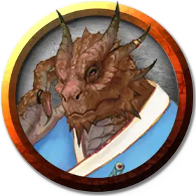

Янг-Ги
Young-Gi
Средний Гуманоид (Драконорождённый), нейтральный, именной НИП

Класс Доспеха 15 (кираса)
Хиты 9 (2к8)
Скорость 30 футов
| мод | спас | ||
|---|---|---|---|
| СИЛ | 11 | +0 | +0 |
| ЛОВ | 12 | +1 | +1 |
| ТЕЛ | 11 | +0 | +0 |
| мод | спас | ||
|---|---|---|---|
| ИНТ | 12 | +1 | +1 |
| МДР | 14 | +2 | +2 |
| ХАР | 16 | +3 | +3 |
Навыки Обман +5, Проницательность +4, Убеждение +5
Сопротивление урону огонь
Чувства пассивное Восприятие 12
Языки Драконий
Опасность 1/8 (25 опыта)
Бонус мастерства +2
Среда обитания Город
Особенности
Языки. Знает Драконий и два любых языка.
Действия
Рапира. Рукопашная атака оружием: +3 к попаданию, досягаемость 5 футов, одна цель. Попадание: 5 (1к8 + 1) колющего урона.
Реакции
Парирование. Янг-Ги добавляет 2 к КД против одной рукопашной атаки, которая должна попасть по нему. Для этого Янг-Ги должен видеть атакующего, и должен использовать рукопашное оружие.